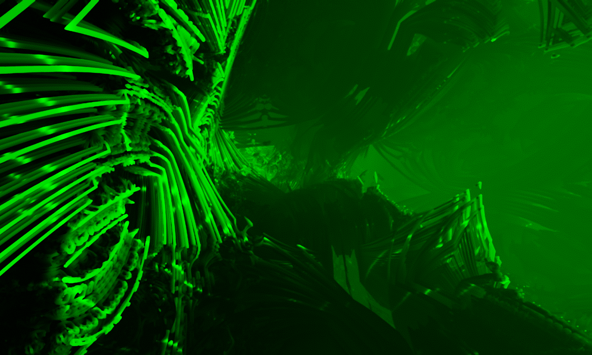
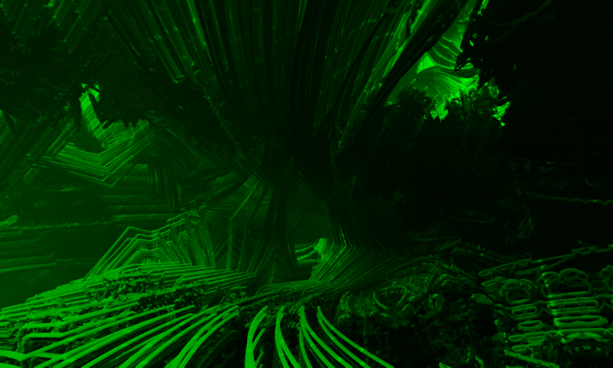

20140712 - VR Topics : Racing Scan-Out + Filtering/Noise
Process
(1.) [A] Do view independent work.
(2.) Read latest prediction of head position and orientation for the time at which the frame gets displayed. This is reading from a client side persistent mapped buffer, then writing into a uniform buffer on the GPU. A real-time background CPU job is updating the prediction each time new sensor data arrives.
(3.) [B] Do view dependent work which all rendering depends on.
(4.) Render frame into the front buffer, racing scan-out. Must render in the coarse granularity order at which the front-buffer gets scanned out. Given that raster order is vendor dependent, this process involves splitting the frame into some number of stacked blocks (where block width is the width of the frame). Each block gets rendered independently in scan-out order. Blocks must be large enough such that they can full fill the GPU with work.
Latency
Racing scan-out might be good for a little over a half frame latency reduction in practice.
Below is an overly simplified example display frame (timing is made up, I removed v-blank, etc). Eight blocks are used. Refresh rate is 8 ms/frame, so scan out per block is 1 ms. Prediction is updated every millisecond. Display flashes 1 ms after scan-out finished, and stays lit for just 2 ms, followed by 6 ms of darkness. A frame has 4/3 ms of view independent work, and 4/3 ms of view dependent work before rendering the frame. Each block takes 2/3 ms to draw. The numbers are all made up to enable drawing an easy ASCII diagram of what is going on,
444555666777000111222333444555666777000111222333 scan-out
__AAAABBBB0011223344556677______________________ GPU work for one frame
__AAAA__________________________________________ view independent work
_____||_________________________________________ read prediction
______BBBB______________________________________ view dependent work
__________00____________________________________ GPU work for block 0
____________000_________________________________ scan-out for block 0
________________________77______________________ GPU work for block 7
_________________________________777____________ scan-out for block 7
_______________________________________XXXXXX___ global display
___PPP__________________________________________ prediction jitter
___---------------------------------------______ latency
444555666777000111222333444555666777000111222333 scan-out
In this made up example, total latency would be at best around 13 ms for a 8 ms scan-out (125 fps). If back-buffer rendering, latency will be longer than 18 ms for a 8 ms scan-out,
000111222333444555666777000111222333444555666777000111222 scan-out
AAAABBBB0011223344556677_________________________________ GPU work for one frame
_______________________||________________________________ swap
________________________------------------------_________ scan-out
_PPP_____________________________________________________ prediction jitter
___________________________________________________XXXXXX global display
_-----------------------------------------------------___ latency
Future Hardware Wish-list
Drive scan-out at the peak rate of the bus and sleep, instead of driving scan-out at the display rate. The faster the better.
Implementation Challenges
Assuming ray-tracing instead of rasterization (can ray-trace in the warped space), and a fully pull model based engine (just re-submit the same commands each frame), and relatively fixed cost per frame, there are still challenges left.
Synchronizing the CPU to the GPU with front-buffer rendering is not well supported by any API. Need something to stall the "read prediction" step until a set amount of time before scan-out of the next frame. For GPU's which support volatile reads which pass L2 and get through to the system bus, could poll a time value written by a background CPU thread. Will need some way to calibrate this system, perhaps as hacky at first as the user dialing in the delay until just before any tearing happens.
Post processing must happen while rendering each block, no screen-space effects. This means bloom needs to be replaced in the common case when diffuse bloom is being used to fake atmospheric scattering effects. For quality filtering, each block must have at least a 2 pixel stencil. Dealing with chromatic aberration is the larger problem, requires an even larger stencil.
One option is to go monochrome in green only, removing the need for any chromatic aberration based filtering,


Filtering and Noise
If DK2 is around 2Mpix/frame at 75Hz, that is a lot of pixels to push. Pixel quality can be broken down into various components,
(a.) Antialiasing. Does geometry snap to pixels?
(b.) Sharpness. What is the maximum frequency of detail in the scene?
(c.) Resolution. What granularity of pixels does geometric edges move by?
With ray-marching, sharpness can be directly related to LOD, or how close one gets to the actual surface. Resolution is relatively independent of the number of rays shot per frame. With a high quality sample pattern it is easy to resolve to a frame which has more pixels than the number of rays shot per frame. With VR, I'd argue that antialiasing and resolution is more important than sharpness because sub-pixel motion is critical for depth perception. On top of that, textures are virtually useless because they look like images painted on toys instead of real geometry. In the spectrum of options, GPU ray-tracing based methods have serious advantages over GPU raster methods simply because of the flexibility of sample distribution. With ray based methods, sharpness ends up being a function of how much GPU perf is available. Lower perf can mean a less sharp frame, but still native spatial resolution to get the same sub-pixel parallax.
I'm highly biased towards using something which feels like temporal film grain to both remove the illusion of rendering perfection and mask rendering artifacts. Probably as a hold over from the fact that I use a Plasma HDTV as a primary monitor, I stick to grain around 1.5 pixels in diameter. Plasma HDTV's use temporal error diffusion, therefore single pixel noise can result in artifacts. Not sure yet what is best for VR, but guessing the grain should be at or slightly higher than the frequency of detail in the scene.
An example of low sharpness, but full resolution, high quality antialiasing, and grain,
{kind=link}
{kind=link}
{kind=link}